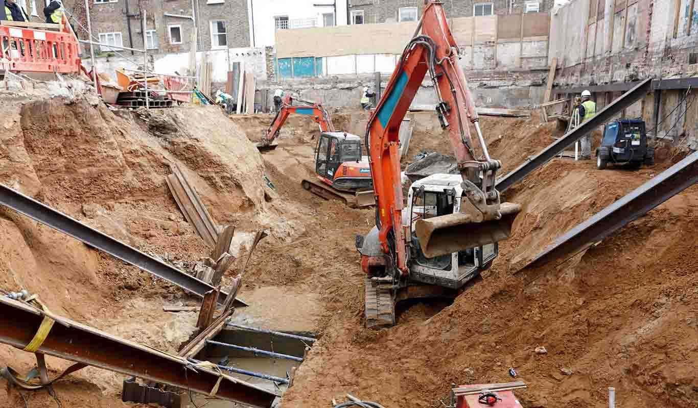

01
01 / CONSTRUCTION
Building & Construction
Building works and general construction services for a range of project requirements, from new construction to structural and building-related works.
- General building works
- Structural construction
- Project construction support
- Building-related works